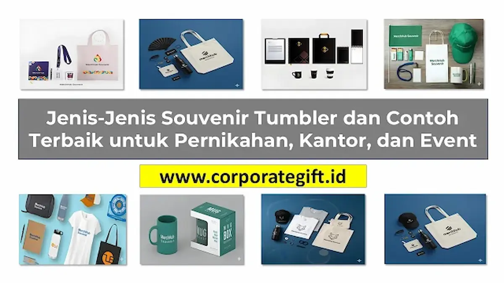

Corporate Gifts ID - Souvenir tumbler adalah botol minum multifungsi yang sering digunakan sebagai cinderamata, media branding perusahaan, dan kenang-kenangan eksklusif untuk acara pernikahan, gathering kantor, hingga seminar korporat. Memilih tumbler sebagai suvenir dinilai sangat efektif karena nilai gunanya yang tinggi, tahan lama dipakai bertahun-tahun, serta fleksibel untuk dikustomisasi logo sesuai identitas acara Anda.
Berbagai jenis tumbler saat ini tersedia luas di pasaran, mulai dari souvenir tumbler stainless steel, tumbler kaca estetik, hingga tumbler ramah lingkungan (eco-friendly). Artikel ini akan membedah karakteristik jenis-jenis tumbler beserta contoh pengaplikasian terbaiknya agar Anda dapat menentukan pilihan yang paling tepat.
Poin Kunci Jenis Souvenir Tumbler:
- Pilihan Material Utama: Stainless steel SUS304 (insulasi suhu maksimal), kaca borosilicate (kesan mewah & higienis), serta serat bambu/gandum (kampanye sustainability).
- Efektivitas Branding: Tumbler kantor menjadi media promosi bergerak yang tahan lama dengan teknik kustomisasi grafir laser atau print UV full color.
- Segmentasi Acara: Sesuaikan desain dengan profil audiens, mulai dari inisial romantis untuk souvenir pernikahan hingga logo korporat profesional untuk seminar kit perusahaan.
Mengapa Souvenir Tumbler Selalu Jadi Pilihan Favorit
Popularitas tumbler sebagai cinderamata tidak pernah surut karena berhasil menjembatani dua kebutuhan utama: utilitas harian dan prestise visual. Penerima cinderamata tidak lagi menumpuk barang yang tidak terpakai, melainkan membawa tumbler ke meja kerja, ruang rapat, maupun fasilitas kebugaran.
Bagi perusahaan, frekuensi penggunaan yang tinggi ini memberikan nilai laba atas investasi (ROI) promosi yang sangat tinggi. Setiap kali tumbler digunakan di tempat umum, identitas brand yang terukir rapi akan disaksikan oleh khalayak yang lebih luas secara organik.
Karakteristik Material: Stainless Steel, Kaca, dan Eco-Friendly
Memahami karakteristik bahan merupakan langkah awal yang krusial sebelum memutuskan volume pemesanan:
1. Souvenir Tumbler Stainless Steel (Vacuum Insulated)
Varian stainless steel adalah pilihan paling populer di segmen korporat karena durabilitas fisiknya yang luar biasa. Dinding ganda berbahan SUS304 food-grade mampu menahan suhu panas kopi maupun es teh dingin selama 8 hingga 24 jam.
- Kelebihan: Tahan benturan, anti-karat, tidak mudah pecah, dan sangat awet.
- Teknik Custom: Sangat presisi diaplikasikan dengan grafir laser permanen yang tidak akan luntur meski dicuci ratusan kali.
- Penggunaan: Paket seminar kit eksekutif, merchandise tahun baru kantor, dan souvenir hari jadi instansi.
2. Souvenir Tumbler Kaca Unik (Borosilicate Glass)
Bagi Anda yang mengedepankan kesan estetik yang bersih dan eksklusif, tumbler berbahan kaca borosilicate adalah jawabannya. Jenis ini sering dilengkapi sarung silikon lembut atau aksen kayu bambu di bagian penutupnya.
- Kelebihan: Tampilan transparan memperlihatkan warna minuman secara elegan, bebas bau, dan higienis.
- Teknik Custom: Sablon frosting elegan atau grafir halus pada tutup kayu bambu.
- Penggunaan: Souvenir resepsi pernikahan VIP, gift set hampers hari raya, dan apresiasi nasabah prioritas perbankan.
3. Souvenir Tumbler Eco-Friendly (Serat Ramah Lingkungan)
Seiring meluasnya kesadaran terhadap krisis lingkungan, tumbler berbahan serat bambu (bamboo fiber) atau jerami gandum (wheat straw) menjadi primadona baru.
- Kelebihan: Mendukung komitmen zero waste dan memperkuat citra ESG (Environmental, Social, Governance) instansi.
- Teknik Custom: Sablon tinta ramah lingkungan (eco-ink) satu warna atau print UV minimalis.
- Penggunaan: Program CSR perusahaan, kampanye kesehatan masyarakat, dan gathering komunitas hijau.

Pilihan tumbler stainless insulasi suhu dengan kustomisasi laser grafir logo yang tahan lama dan elegan.
Tabel Komparasi Jenis-Jenis Souvenir Tumbler
Berikut perbandingan ringkas antar-jenis tumbler untuk mempermudah kalkulasi kebutuhan pengadaan Anda:
| Tipe Material | Retensi Suhu | Daya Tahan Fisik | Kesan Estetika | Rekomendasi Acara |
|---|---|---|---|---|
| Stainless Steel SUS304 | Sangat Baik (8-24 Jam) | Sangat Tinggi (Anti Pecah) | Modern & Profesional | Event kantor, seminar kit, hadiah VIP |
| Kaca Borosilicate | Standar (1-3 Jam) | Sedang (Perlu Wadah Busa) | Mewah, Elegan, Bersih | Pernikahan, hampers eksklusif |
| Eco-Friendly (Bambu/Gandum) | Rendah (Minuman Hangat/Biasa) | Tinggi (Ulet & Ringan) | Natural, Hangat, Edukatif | Event CSR, kampanye go-green |
Contoh Penggunaan: Pernikahan Elegan vs Merchandise Kantor
Kunci keberhasilan souvenir tumbler terletak pada keselarasan desain dengan karakteristik audiens acara:
- Cinderamata Pernikahan: Pilih palet warna pastel (sage green, dusty pink, atau ivory) atau tumbler kaca beraksen kayu. Cetak inisial nama mempelai dan tanggal resepsi secara anggun dan tidak mencolok. Kemas menggunakan kotak mika transparan atau pita satin untuk menonjolkan keanggunan.
- Merchandise Kantor & Promosi: Prioritaskan souvenir kantor berpalet warna netral (hitam matte, perak metalik, atau navy). Pastikan logo instansi dicetak secara proporsional di bagian tengah bodi menggunakan teknologi grafir laser agar memberikan kesan resmi dan berkelas.
5 Tips Memilih Jenis Tumbler yang Tepat Sesuai Anggaran
- Kenali Karakteristik Audiens: Tentukan apakah penerima lebih membutuhkan kepraktisan kerja (staf kantor), nilai estetika (tamu undangan resepsi), atau pesan moral (komunitas lingkungan).
- Wajib Bersertifikasi Food Grade: Pastikan material telah memenuhi standar keamanan pangan (BPA-free) agar aman digunakan untuk minuman asam, teh panas, maupun kopi.
- Pilih Kapasitas yang Ergonomis: Volume 450ml hingga 500ml adalah ukuran paling ideal karena pas di tempat penyimpanan mobil (cup holder) dan praktis dimasukkan ke dalam tas kerja.
- Pilih Teknik Cetak yang Tahan Cuci: Hindari sablon manual berkualitas rendah yang rentan terkelupas. Investasikan pada laser grafir untuk media metal atau UV print high-resolution.
- Perhitungkan Waktu Produksi (Lead Time): Lakukan pemesanan minimal 2 sampai 3 minggu sebelum acara agar proses pembuatan mockup, proofing warna, dan produksi massal berjalan tanpa kendala keterlambatan.
Kesimpulan
Souvenir tumbler menawarkan fleksibilitas luar biasa untuk menjangkau beragam segmen acara. Melalui kurasi material yang tepat dan sentuhan desain kustomisasi yang berkelas, souvenir Anda tidak hanya menjadi barang pajangan, melainkan sahabat setia yang menemani rutinitas penerima sekaligus menjaga eksistensi citra positif brand Anda.
Konsultasikan kebutuhan merchandise tumbler custom perusahaan Anda bersama spesialis CorporateGifts.ID untuk memperoleh sampel material gratis dan penawaran harga terbaik.